Test Sets
The "Test Sets" menu on the AST Control Panel provides the organization of individual test cases into logical groups for streamlined, combined execution.
The menu has a structure similar to the test case repository. It is designed for efficiency, with the left side of the screen displaying a repository tree view of all available test sets. This whole menu is collapsible, so you can hide the tree view and use the whole screen for the content area if you want to focus on details of a specific test set.
Selecting an item from this tree populates the main content area with detailed information and options for that particular test set.
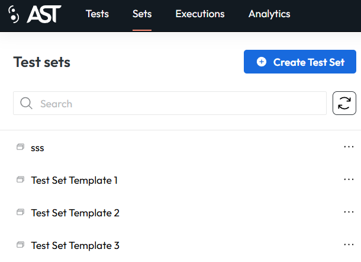
You can also filter the test sets. The results are loaded whilst you type characters one by one. Use the refresh button if you feel the tree isn't properly loaded.
Context menu
An important feature of this menu is the context menu, which appears when a user clicks on the three dots next to the test set in the repository tree. This menu offers several actions for managing the selected set.
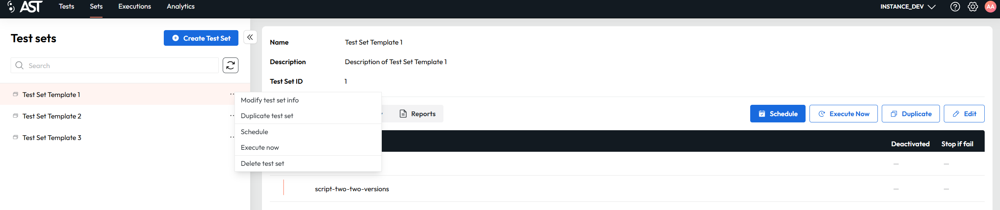
| Action | Description |
|---|---|
| Modify Test Set Info | Allows user to change the name |
| Duplicate Test Set | Creates a copy of the test set, see Duplicate test set |
| Schedule | Allows the user to schedule an execution of test set |
| Execute Now | Immediate execution of test set |
| Delete Test Set | Deletes test set |
The primary content area is divided into two key sections. At the top, a metadata panel displays the Name, Description, and unique Test Set ID. This provides quick, high-level context about the selected set. Below this, a tabbed interface further organizes the information.
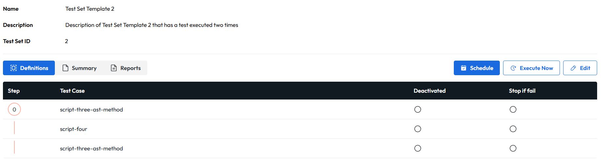
Definitions tab
The Definitions tab shown in the previous image lists all the individual test cases included in the test set. For each test case, it displays its name, execution sequence, and whether it is Deactivated. This organized table gives the user a clear view of which tests are part of the set and their execution order.
You can also see four buttons: Schedule, Execute Now, Duplicate and Edit. Schedule is used for scheduling the test set for a certain time.
Execute Now executes the testcase immediately. Duplicate creates a copy of the test set, see Duplicate test set. Edit button allows you to edit the test set: Adding/removing testcases, changing order of testcases (individually or several at once) etc.
When in edit mode, the following options are available:
Adding/removing of test cases
Testcases can be added or removed from the test set via the Add test case button and removed by using the trash can icon.
The trash can icon always removes just one test case
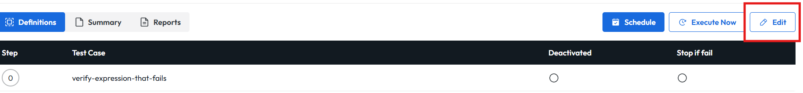
For more details on the topic of adding testcases check out the chapter Add test cases to already existing test set.
Sequence of execution
Sequence can be parallel or sequential. In parallel execution, all test cases are executed simultaneously, while in sequential execution, test cases are executed one after the other in a specified order. The image below shows that the two test cases are set to execute in parallel as indicated by the line before the second test case. The third test case has a number next to it, which means that it will be executed after the first two test cases are finished.
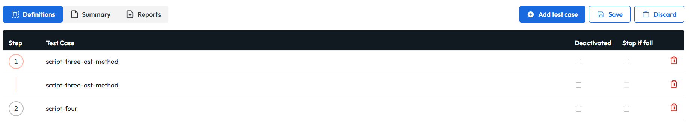
To group test cases into parallel or sequential execution you need to click the Edit button in the Definitions tab. There are several ways to move test cases:
Drag and drop
In edit mode you can move a test case by dragging its row and dropping it on another row. Where you release it on the target row decides what happens:
| Drop position | Highlight | Result |
|---|---|---|
| Middle of the row | Row is highlighted | The test case runs in parallel with the target test case (same step) |
| Top edge of the row | Blue line above the row | The test case is placed before the target test case |
| Bottom edge of the row | Blue line below the row | The test case is placed after the target test case |
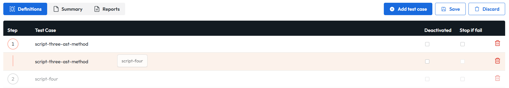
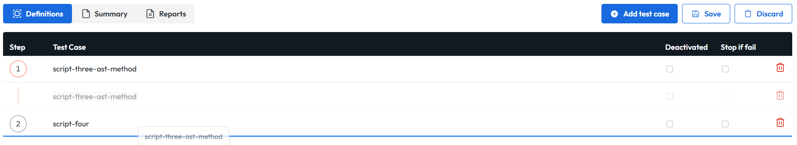
When you drop on the line between two different steps, the test case becomes a new step at that position and the following steps are shifted down. When you drop on the line between two test cases of the same parallel step, the test case joins that parallel step.
Info
A moved test case takes over the Stop if fail setting of the step it is moved into.
Changes are applied only after you click Save. Click Discard to undo them.
You can also drag several selected test cases at once, see Dragging multiple test cases.
Move dialog
Each test case has an arrow button next to the delete button (see screenshot). Clicking this button opens the move test case dialog.
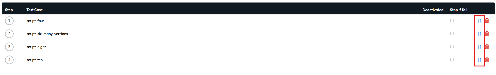
In the move dialog the test name and current step number are displayed. You can edit the target step where the test case would be moved to.
If the Insert as step radio button is selected the test case is moved to the target step.
If the Add in parallel to existing step radio button is selected then the test case is added to an existing step as a parallel execution.
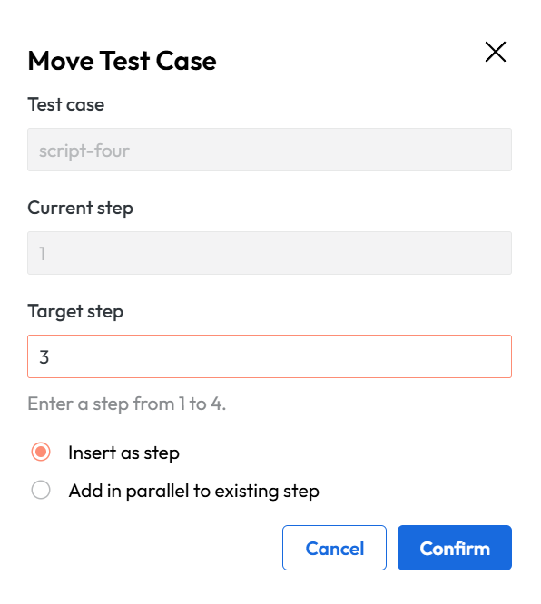
If you decide to move any test case that is part of a parallel step the dialog will contain two more radio buttons.
If the Selected test case radio button is selected then only the selected test case is moved.
If the Whole parallel step radio button is selected then all of the test cases in the parallel step are moved.
The Insert as step and Add in parallel to existing step options work the same as described above.
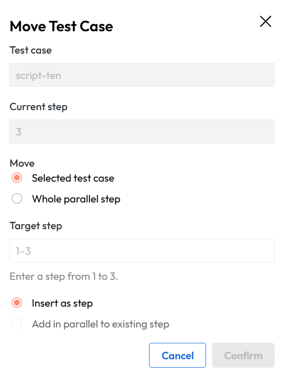
Moving multiple test cases at once
In edit mode you can select several test cases and move them to a step in a single action.
| Action | Result |
|---|---|
Ctrl + click (Cmd on macOS) |
Adds the test case to the selection, or removes it if it is already selected |
Shift + click |
Selects all test cases between the last clicked test case and the clicked one |
Ctrl + Shift + click |
Adds the range to the current selection instead of replacing it |
Selected rows are highlighted. Clicking a checkbox, the instance field or the action icons does not change the selection.
As soon as at least one test case is selected, a toolbar appears above the table. It shows how many test cases are selected and offers two buttons:
Set stepopens the Set step dialog for the selected test cases.Clear selectiondeselects all test cases.
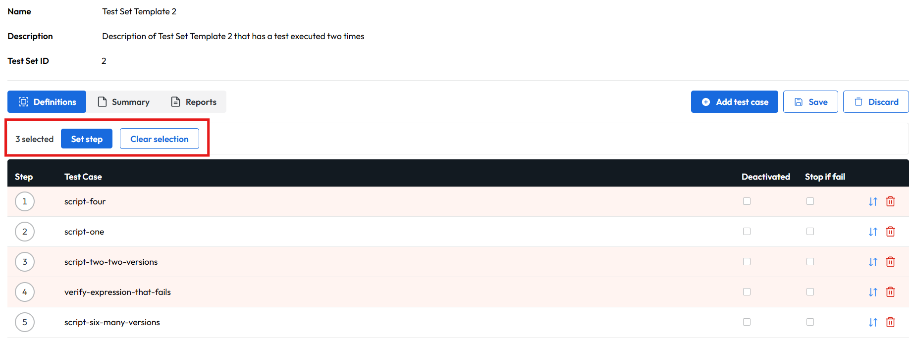
The Set step dialog lists the selected test cases. Enter the Target step (a number between 1 and the highest step in the test set) and choose how the test cases are placed:
- Insert as step: All selected test cases are inserted together as one new parallel step at the target step. The following steps are shifted down.
- Add in parallel to existing step: The selected test cases are added in parallel to the test cases already in the target step. This option is only available if the target step already exists.
Click Confirm to apply the change, or Cancel to close the dialog without changes.
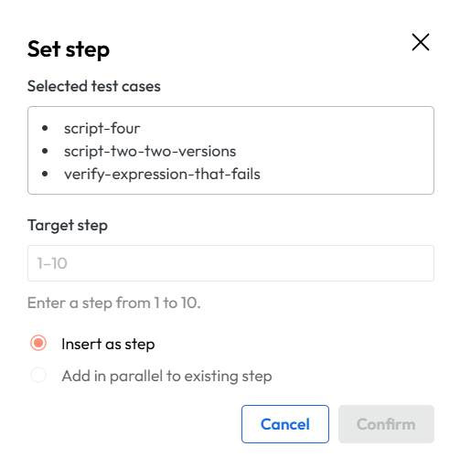
Info
The selected test cases keep the order in which they appear in the table. With Insert as step, the first selected test case determines the Stop if fail setting of the new step. With Add in parallel to existing step, the moved test cases follow the Stop if fail setting of the target step.
The selection is cleared after a move is confirmed and when you leave edit mode. As with all other changes, click Save to keep the new order.
Dragging multiple test cases
Selected test cases can also be moved with drag and drop. Select the test cases, then drag one of the selected rows. All selected test cases are moved together, and the drag preview shows the name of the dragged test case followed by the number of other selected test cases, e.g. Checkout and 2 more. The selected rows are marked while you drag them.
Where you drop the test cases determines how they are placed:
- Dropping them on a test case adds all selected test cases in parallel to that test case's step (same as Add in parallel to existing step).
- Dropping them on the line before or after a test case inserts all selected test cases together as one new parallel step before or after that test case's step (same as Insert as step).
Info
The same rules as in the Set step dialog apply: the selected test cases keep the order in which they appear in the table, and the Stop if fail setting is applied the same way. Selected test cases cannot be dropped on another selected test case. If you drag a test case that is not selected, only that test case is moved and the selection is ignored.
Tip
To move a single test case you can still use drag and drop or the move dialog.
Stop execution on failure
You can select the Stop if fail checkbox for a test case so that if it fails, the remaining test cases in the set are skipped. When that happens, test cases with a higher sequence number are skipped and marked as skipped in the execution report.
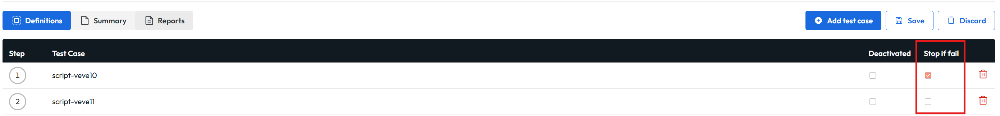
Info
We strongly recommend that you use Stop if fail for test cases that are executed in sequence.
In parallel execution, only the first checkbox is selectable; the other test cases in the same parallel group follow the same behavior as the first one. This is because test cases in a parallel group run at the same time, so their execution order cannot be guaranteed.
Important
If Stop if fail is enabled for a test case in a parallel group and that test case fails, the other test cases in the same parallel group are not skipped. This is because test cases in a parallel group run at the same time and share the same sequence number, so their execution order cannot be guaranteed. Only test cases with a higher sequence number than the failed test case are skipped.
Saving and discarding
Changes to test set can be discarded at any time using the Discard button. This will restore the last saved version of the test set.
To save changes you made to the test set you need to click on the Save button, otherwise the changes are not going to be saved.
Summary tab
The Summary tab shown in the image below allows you to select the instance on which the selected test set was executed and the date range for which you want to see the summary. Summary works as an overview. For more details, check the Reports tab.
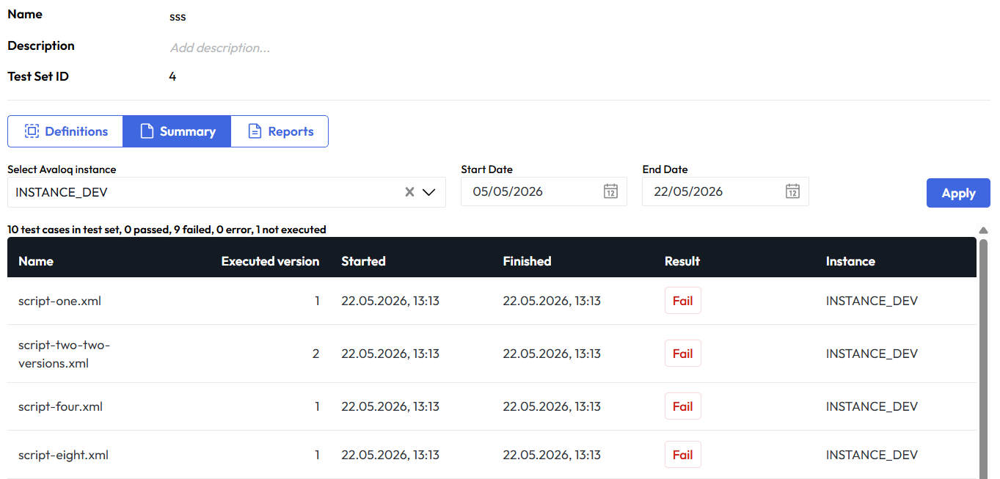
Reports tab
The Reports tab contains the full table with many fields that can be set up for a different view.
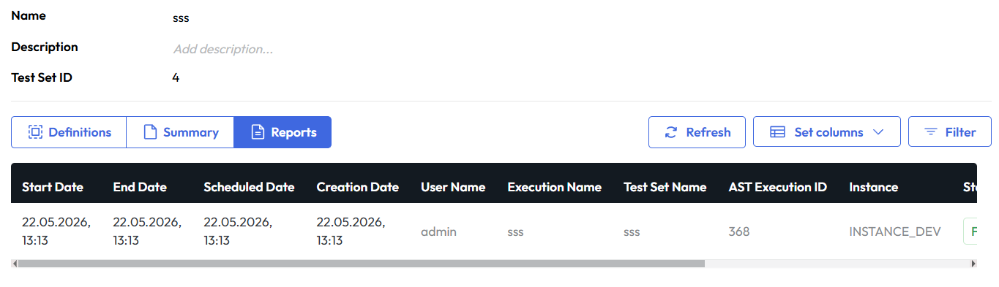
The table is designed to provide a comprehensive overview of all scheduled and executed test runs, allowing users to track the history and outcomes of their test executions effectively. The table columns organize data points to track the execution timeline and ownership. These include the Start Date, End Date, Scheduled Date, and Creation Date, allowing for tracking of initiation and completion times. Additional columns identify the User Name responsible for the run and the specific Test Set or test case that was executed. Each execution is uniquely identified by an Execution ID and has a specific Status, such as "Finished."
The table includes a summary of execution results, detailing the number of Tests:
| Execution result | Details |
|---|---|
| Passed | Execution finished successfully |
| Failed | Execution finished but failed a condition |
| Error | Execution did not finish, probably due to technical reasons |
| Skipped | Execution was not started because a preceding test case failed or the execution was cancelled |
| Cancelled | Execution was being executed and cancelled by the user |
| Scheduled | Execution that is going to be executed at a set time in the future |
This numerical breakdown offers an immediate status of the execution outcome. The right-most columns provide action options, including viewing Reports and controls to Modify or Delete a scheduled run.
A separate detail window, accessed by clicking the desired row, provides a focused view of a single execution. At the top, a summary displays the total number of tests run and the breakdown of passed, failed, error, and pending results. A "Summary HTML report" button is available for a full report generation.
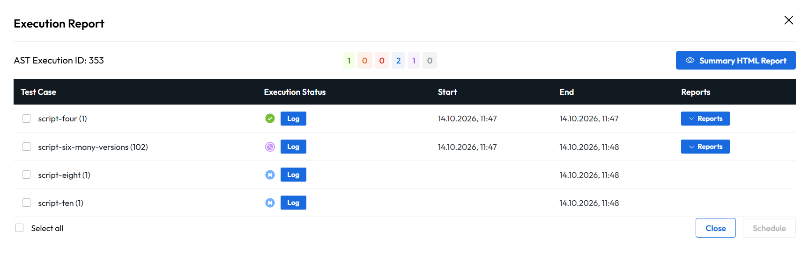
Granular execution report detail. This modal window displays the results breakdown and provides links to retrieve various report formats for in-depth analysis. For more details on the report formats, see the Reports section.
The window lists the individual Test Cases included in the run. For each case, the Step number, the Stop if fail setting, the Status, Start time, and End time of its execution are listed. The Step column shows the position of the test case in the execution sequence; test cases executed in parallel share the same step number. The Stop if fail column shows a check mark if Stop if fail was enabled for the test case when the execution was scheduled, and a dash otherwise. The Reports dropdown offers access to the execution data for that specific test case in the following formats: HTML, Log, XML, and Excel. This allows for granular review and data integration. The bottom of the window provides controls to Schedule the test run again or Close the report window.
Sorting the execution report table
The execution report table can be sorted by clicking a column header. The following columns are sortable:
- Step: sorted by the execution sequence number.
- Test Case: sorted alphabetically by the test case name (including its version).
- Execution Status: sorted alphabetically by the displayed status (Cancelled, Error, Failed, Processing, Scheduled, Skipped, Success).
- Start and End: sorted chronologically.
- Xray Sync Status and ALM Sync Status: sorted alphabetically by the displayed sync status. These columns are only shown when Xray or ALM synchronization is used for the run.
The first click sorts the column in ascending order and the second click in descending order. Only one column can be sorted at a time. Rows without a value in the sorted column (for example, test cases that have not started yet) are always shown at the bottom. Sorting works together with the status filter badges and resets when you open a different execution.
Scheduling test cases again from the report
You can schedule test cases from an execution report again, for example to repeat the test cases that failed:
- Open the execution report by clicking the execution in the Reports tab or in the Executions tab.
- Select one or more test cases in the report table. The
Schedulebutton is enabled only when at least one test case is selected. - Click
Schedule. The Schedule execution dialog opens with the selected test cases.
The dialog is prefilled with values from the execution you opened:
- Execution name: the name of the execution.
- Avaloq instance: the instance the execution ran on, even if a different instance is selected in the header. This way the test cases are run again on the same instance by default.
If the instance of the execution is no longer available, the instance selected in the header is used instead. If that instance is not available either, the first available instance is used.
You can change any of the prefilled values before you schedule the execution. When you schedule from the Tests or Test Sets screens, the instance selected in the header is still used as the default.
Test set creation and alterations
Add new test set
To create a test set you can use the Create Test Set button in the Test Sets screen or you can use the Create New in the Tests screen. Then a dialog will appear where you can set up the name, description and select test cases that will be part of this set.
If the Add each testcase as a step radio button is selected the newly selected test cases are each added as separate steps.
If the Add as one parallel step radio button is selected then all of the selected testcases will be added as one parallel step.
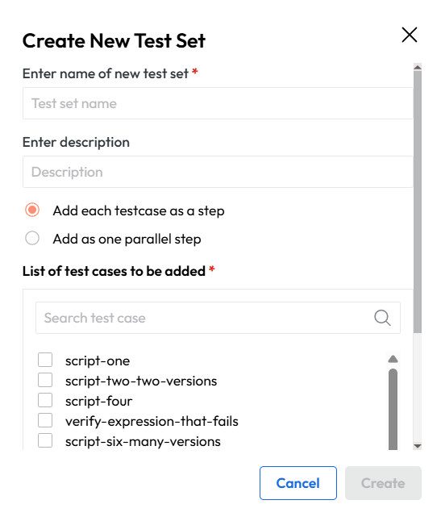
You can also use the context menu for the folders and testcases in the test case screen to create a new test set. In this case the same dialog appears but with already preselected testcase or all testcases from a folder.
Add test cases to already existing test set
In the Test set view in an open test set you can click on the Edit button in the Definitions tab. This will enable editing of the test set. Then you click on the Add test case button which will open a dialog from which you can select a test case that will be added to this set.
In the Add Test Case dialog, test cases that are already included in the test set are preselected and greyed out. To add new test cases, select them and click Add.
For the meaning of the Add each testcase as a step and Add as one parallel step, check Add new test set.
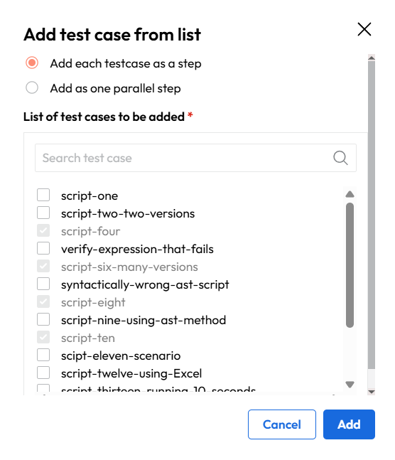
Another option is to use the context menu for the folders and testcases in the test case screen. Then you choose add to existing test set and then select the test set to which you want to add this test case or folder.
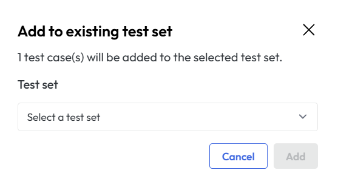
Duplicate test set
You can create a copy of an existing test set, for example to use it as a starting point for a similar test set. There are two ways to do this:
- Click the
Duplicatebutton in the Definitions tab of the open test set. The button is not shown while the test set is in edit mode. - Click the three dots next to the test set in the repository tree and select Duplicate test set from the context menu.
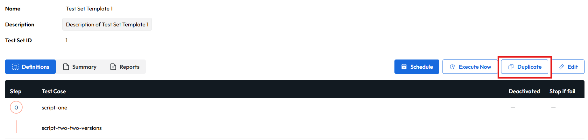
The copy is created immediately, without a dialog. When it is created, a confirmation message is shown and the new test set is opened.
The copy is named Copy of followed by the name of the original test set, for example Copy of Regression. If a test set with this name already exists, a number is added, for example Copy of Regression (1), Copy of Regression (2) and so on. The comparison ignores upper and lower case.
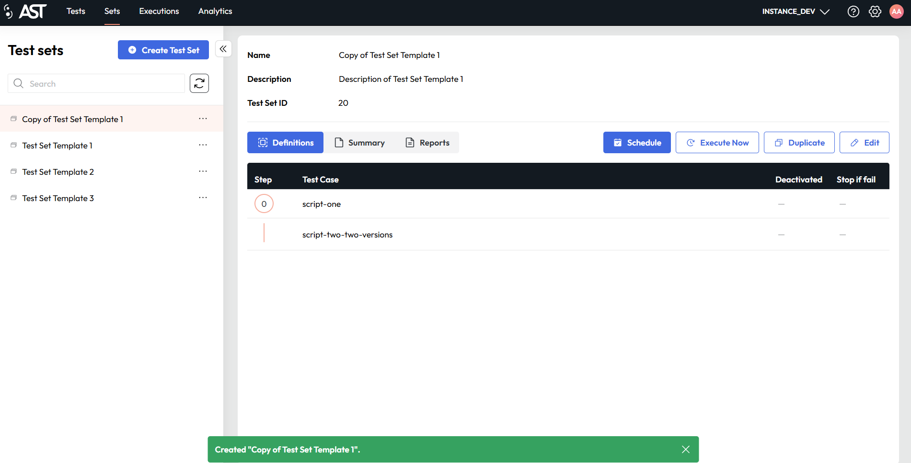
The copy contains the following from the original test set:
- The description
- All test cases in the same order, with the same sequence of execution (steps and parallel steps)
- The Deactivated and Stop if fail settings and the selected instance of each test case
The execution history of the original test set, including its scheduled executions and reports, is not copied.
Info
The copy is always made from the last saved version of the test set. To rename the copy or change its description, use Modify test set info in the context menu.
Scheduling and Executing Test Sets
If you want to execute a test set immediately, you can select 'Execute now' from the Definitions tab. This will run the test set on selected instance and show results in Reports tab.
When clicking on the Schedule button a dialog will appear, allowing you to set up the parameters for scheduling the execution of the test set. You can select the specific test set and instance on which it will run, as well as the scheduled date and time for execution. Additionally, there are options to configure recurrence if you want the test set to run on a regular basis.
The interface consists of a detailed, scrollable table that functions as the central log for both scheduled and completed test runs, structured to provide a comprehensive record of execution history.
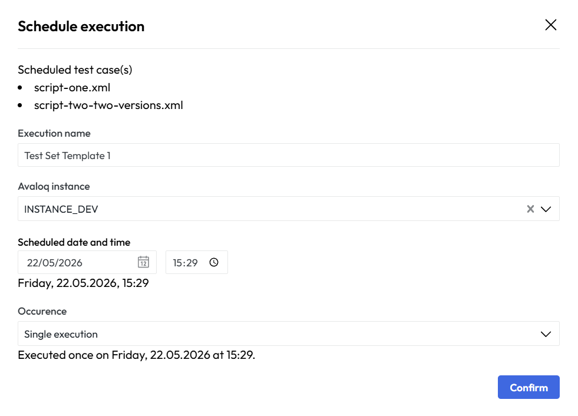
You will be able to see the scheduled execution in the table in the Executions tab.